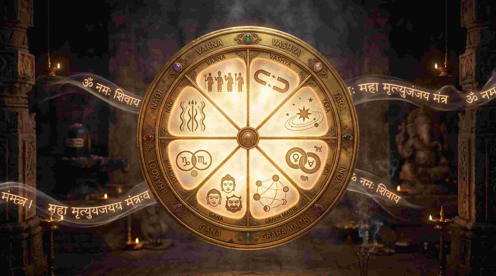
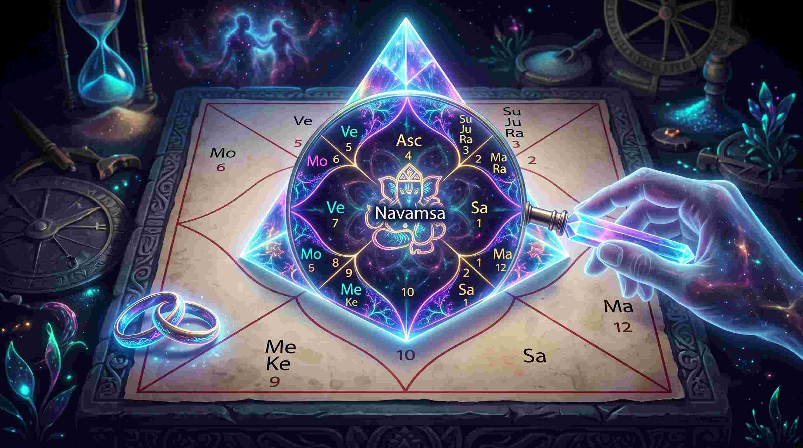

भारत में विवाह केवल दो व्यक्तियों का नहीं, बल्कि दो आत्माओं, दो परिवारों और उनके कर्मों का मिलन माना जाता है। जब भी शादी की बात आती है, तो सबसे पहला कदम होता है— कुंडली मिलान (Kundali Milan)। लेकिन आज के समय में एक बहुत बड़ा सवाल खड़ा हो गया है: "पंडित जी ने तो 36 में से 32 गुण मिलाए थे, फिर भी शादी एक साल में ही क्यों टूट गई?"
एक ज्योतिषी होने के नाते मैं अक्सर लोगों को समझाता हूँ कि केवल सॉफ्टवेयर या कंप्यूटर से 'अष्टकूट' (8 Kootas) के नंबर मिला लेना सफल विवाह की गारंटी नहीं है। दोनों कुंडलियों के ग्रह, नवांश और दशाएं भी उतनी ही महत्वपूर्ण हैं।
"कुंडली मिलान केवल अंकों का गणित नहीं है; यह दो व्यक्तियों के स्वभाव, ग्रह-दशा और जीवन-लक्ष्यों को साथ रखकर समझने की एक पारंपरिक विधि है।"
1. अष्टकूट मिलान (Ashtakoot Milan): 36 गुणों का असली अर्थ क्या है?
ज्यादातर लोग सोचते हैं कि 36 गुण सिर्फ एक स्कोर है। असल में, यह स्कोर 8 अलग-अलग मापदंडों (Parameters) से बनता है, जिसे 'अष्टकूट' कहा जाता है। आइए इन्हें सरल भाषा में समझते हैं:

- वर्ण (Varna) - 1 अंक: यह आध्यात्मिक अनुकूलता और काम करने की क्षमता (Work Ethic) को दर्शाता है। यह तय करता है कि दोनों के ईगो (Ego) आपस में कैसे टकराएंगे।
- वश्य (Vashya) - 2 अंक: वश्य का अर्थ है 'नियंत्रण' (Control)। यह दर्शाता है कि रिश्ते में पावर डायनामिक्स (Power Dynamics) कैसे होंगे। क्या दोनों में से कोई एक दूसरे पर हावी होने की कोशिश करेगा?
- तारा (Tara) - 3 अंक: तारा मिलान भाग्य (Destiny) का मिलन है। यह बताता है कि क्या एक साथी का भाग्य दूसरे के दुर्भाग्य को काट सकता है या नहीं।
- योनि (Yoni) - 4 अंक: योनि मिलान पति-पत्नी के स्वभाव और आपसी आकर्षण की अनुकूलता को दर्शाता है। यदि योनि दोष हो, तो दोनों के बीच तालमेल बनाने के लिए अधिक समझदारी की ज़रूरत मानी जाती है।
- ग्रह मैत्री (Graha Maitri) - 5 अंक: यह मनोवैज्ञानिक संरेखण (Psychological alignment) है। क्या आप दोनों दुनिया को एक ही नज़रिए से देखते हैं? क्या आपकी दिमागी वायरिंग एक जैसी है? यह चंद्र राशियों के स्वामियों की मित्रता पर निर्भर करता है।
- गण (Gana) - 6 अंक: गण (देव, मनुष्य, राक्षस) व्यक्ति के मूल स्वभाव (Core Temperament) को दर्शाता है। क्या आप शांत स्वभाव के हैं या आक्रामक? गण दोष होने पर छोटी-छोटी बातों पर भयंकर विवाद होते हैं।
- भकूट (Bhakoot) - 7 अंक: यह स्वास्थ्य, धन और भावनात्मक प्रतिध्वनि (Emotional Resonance) का मिलन है। भकूट दोष होने पर शादी के बाद अचानक स्वास्थ्य खराब होना या आर्थिक नुकसान होना आम बात है।
- नाड़ी (Nadi) - 8 अंक: नाड़ी मिलान 36 गुणों में सबसे अधिक अंक वाला कूट है। शास्त्रों में नाड़ी दोष को विवाह में विशेष ध्यान देने योग्य माना गया है, लेकिन कई स्थितियों में इसका परिहार भी बताया गया है। स्वास्थ्य से जुड़ी कोई भी चिंता हो तो डॉक्टर से जाँच कराना ही सही रास्ता है।
3. मंगल दोष (Mangal Dosha) का डर: मिथक और वास्तविकता
शादी के मामले में सबसे ज्यादा डराने वाला शब्द है— "मांगलिक"। जब कुंडली के पहले, चौथे, सातवें, आठवें या बारहवें भाव में मंगल बैठता है, तो व्यक्ति को मांगलिक कहा जाता है। लोग सोचते हैं कि मांगलिक होने का मतलब है जीवनसाथी की मृत्यु हो जाना। यह एक बहुत बड़ा झूठ और मिथक है!
ज्योतिष में मंगल (Mars) ऊर्जा, साहस और उत्साह का कारक है। मांगलिक व्यक्ति में ऊर्जा और आवेग अधिक माना जाता है, इसलिए दोनों साथियों के स्वभाव का तालमेल देखना ज़रूरी होता है।
हाई-एनर्जी वाला व्यक्ति हमेशा हावी होने की कोशिश करेगा, जिससे रिश्ते में तनाव, क्रोध और अंततः अलगाव (Divorce) की नौबत आ जाएगी। इसलिए एक मांगलिक की शादी दूसरे मांगलिक से की जाती है—ताकि दोनों की ऊर्जा (Fire) आपस में टकराकर शांत (Balance) हो जाए। मंगल दोष कोई श्राप नहीं है, यह सिर्फ 'एनर्जी मैचिंग' का विज्ञान है।
4. नवांश कुंडली (Navamsha / D-9 Chart): विवाह का असली एक्स-रे
अब आते हैं उस रहस्य पर जिसके कारण 32 गुण मिलने के बाद भी शादियां टूट जाती हैं। आप जो अपनी मुख्य कुंडली देखते हैं, वह लग्न कुंडली (D-1 Chart) है। यह कुंडली केवल बाहर का आवरण है। विवाह की असली सफलता, जीवनसाथी का स्वभाव, और शादी के बाद की किस्मत नवांश कुंडली (D-9 Chart) में छिपी होती है।

D-9 चार्ट विवाह का 'एक्स-रे' (X-Ray) है। यदि लग्न कुंडली में विवाह का स्वामी (7th Lord) बहुत मजबूत है, लेकिन नवांश कुंडली (D-9) में वह नीच का (Debilitated) हो गया, राहु-केतु से पीड़ित हो गया, या 6, 8, 12वें भाव में चला गया, तो 36 में से 36 गुण मिलने के बाद भी वह विवाह दुखदायी साबित होगा। बिना D-9 चार्ट का सूक्ष्म अध्ययन किए किसी भी विवाह को हरी झंडी देना ज्योतिषीय अपराध है।
5. आधुनिक युग के रिश्ते और कुंडली के "रेड फ्लैग्स" (Red Flags)
आज के समय में तलाक और एक्स्ट्रा-मैरिटल अफेयर्स के मामले बहुत बढ़ गए हैं। कुंडली मिलान के समय, गुणों के अलावा दोनों की व्यक्तिगत कुंडलियों में कुछ 'रेड फ्लैग्स' (खतरे के संकेत) जरूर चेक करने चाहिए:
- राहु-शुक्र की युति (Rahu-Venus Conjunction): शुक्र प्रेम है और राहु भ्रम है। यदि किसी की कुंडली में यह युति बुरी तरह प्रभावित है, तो व्यक्ति को कभी भी एक रिश्ते में संतुष्टि नहीं मिलती। वह हमेशा कुछ 'नया' और 'रोमांचक' तलाशता है।
- सप्तमेश का 6ठे, 8वें या 12वें भाव में होना: यह स्थिति अक्सर वैवाहिक जीवन में कानूनी विवाद (Litigation), अलगाव या जीवनसाथी के खराब स्वास्थ्य का संकेत देती है।
- चंद्र-शनि की युति (विष योग): यदि किसी एक साथी का मन (चंद्रमा) हमेशा निराशा या शंकाओं (Saturn) से घिरा रहेगा, तो शादी में खुशी कभी नहीं आ सकती। इसके लिए समय रहते ज्योतिषीय उपाय और आपसी संवाद बेहद जरूरी है।
निष्कर्ष: एक सफल विवाह का असली सूत्र
आधुनिक युग में, कुंडली मिलान को एक 'अंतिम फैसले' के रूप में नहीं, बल्कि एक 'मार्गदर्शक' (Guidance tool) के रूप में लेना चाहिए। 36 गुण केवल यह बताते हैं कि आपके सॉफ्टवेयर कितने मैच करते हैं, लेकिन उस रिश्ते को चलाना आपकी आपसी समझ (Mutual Understanding), सम्मान (Respect), और संवाद (Communication) पर निर्भर करता है।
यदि आप विवाह करने जा रहे हैं, तो कंप्यूटर जनित (Computer-generated) गुण मिलान पर आंख मूंदकर भरोसा न करें। एक योग्य ज्योतिषी से दोनों कुंडलियों का D-1, D-9, नाड़ी और ग्रहों की दृष्टि का गहरा विश्लेषण करवाएं। सही ज्ञान, तार्किक उपाय (Remedies) और एक-दूसरे के प्रति समर्पण ही वह कॉस्मिक गोंद है जो दो आत्माओं को जीवन भर के लिए जोड़े रखता है।